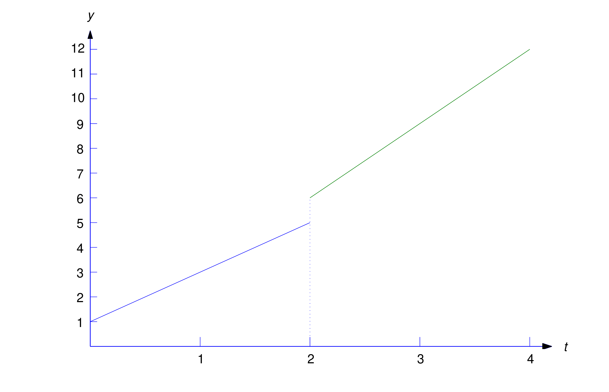
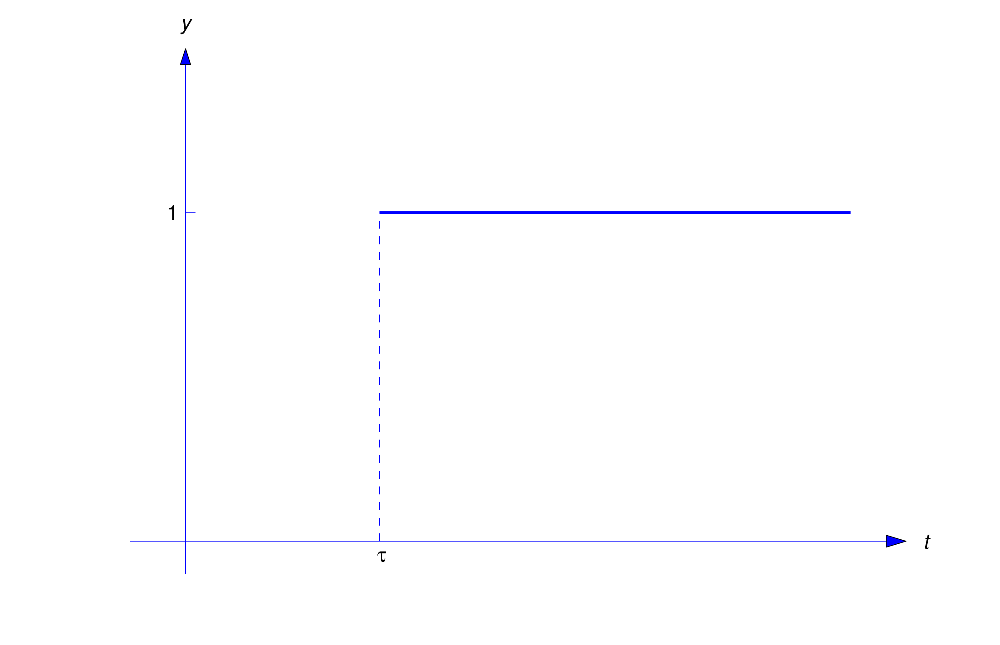

In the next section we’ll consider initial value problems \[ a\ddot{y}+b\dot{y}+cy=f(t),\quad y(0)=k_0,\quad \dot{y}(0)=k_1\] where \(a\), \(b\), and \(c\) are constants and \(f\) is piecewise continuous. In this section we’ll develop procedures for using the table of Laplace transforms to find Laplace transforms of piecewise continuous functions, and to find the piecewise continuous inverses of Laplace transforms.
Use the table of Laplace transforms to find the Laplace transform of
\begin {equation}
\label {eq:8.4.1}
f(t)=\left \{
\begin {array}{cl}
2t+1,&0\le t<2,\\ 3t,&t\ge 2
\end {array}
\right.
\end {equation}
(Figure 8.4.1).
Solution
Since the formula for \(f\) changes at \(t=2\), we write
\begin {equation}
\label {eq:8.4.2}
\begin {array}{ccl}
{\cal L}(f)&=&\displaystyle \int _0^\infty e^{-st}f(t)\,dt\\ &=&\displaystyle \int _0^2 e^{-st}(2t+1)\,dt+\int _2^\infty e^{-st}(3t)\,dt
\end {array}
\end {equation}
To relate the first term to a Laplace transform, we add and subtract \[ \int _2^\infty e^{-st}(2t+1)\,dt \] in (8.4.2) to obtain
\begin {equation}
\label {eq:8.4.3}
\begin {array}{ccl}
{\cal L}(f)&=&\displaystyle \int _0^\infty e^{-st}(2t+1)\,dt+ \int _2^\infty e^{-st}(3t-2t-1)\,dt\\ &=&\displaystyle \int _0^\infty e^{-st}(2t+1)\,dt+ \int _2^\infty e^{-st}(t-1)\,dt\\ &=&\displaystyle {\cal L}(2t+1)+\int _2^\infty e^{-st}(t-1)\,dt
\end {array}
\end {equation}
To relate the last integral to a Laplace transform, we make the change of variable \(x=t-2\) and rewrite the integral as
Since the symbol used for the variable of integration has no effect on the value of a definite integral, we can now replace \(x\) by the more standard \(t\) and write \[ \int _2^\infty e^{-st}(t-1)\,dt =e^{-2s}\int _0^\infty e^{-st}(t+1)\,dt=e^{-2s}{\cal L}(t+1)\] This and (8.4.3) imply that \[ {\cal L}(f)={\cal L}(2t+1)+e^{-2s}{\cal L} (t+1)\] Now we can use the table of Laplace transforms to find that \[ {\cal L}(f)={2\over s^2}+{1\over s} +e^{-2s}\left ({1\over s^2}+{1\over s}\right )\]

Figure 8.4.1 The piecewise continuous function (8.4.1)

Figure 8.4.2 \(y=u(t-\tau )\) Laplace Transforms of Piecewise Continuous Functions
We’ll now develop the method of Example 8.4.1 into a systematic way to find the Laplace transform of a piecewise continuous function. It is convenient to introduce the unit step function, defined as \begin {equation} \label {eq:8.4.4} u(t)=\left \{ \begin {array}{rl} 0,&t<0\\ 1,&t\ge 0 \end {array}\right. \end {equation} Thus, \(u(t)\) “steps” from the constant value \(0\) to the constant value \(1\) at \(t=0\). If we replace \(t\) by \(t-\tau \) in (8.4.4), then
\[ u(t-\tau )=\left \{
\begin {array}{rl}
0,&t<\tau ,\\ 1,&t\ge \tau
\end {array}\right .
\]
that is, the step now occurs at \(t=\tau \) (Figure 8.4.2).
The step function enables us to represent piecewise continuous functions conveniently. For example, consider the function \begin {equation} \label {eq:8.4.5} f(t)=\left \{\begin {array}{rl} f_0(t),&0\le t<t_1,\\ f_1(t),&t\ge t_1 \end {array}\right. \end {equation} where we assume that \(f_0\) and \(f_1\) are defined on \([0,\infty )\), even though they equal \(f\) only on the indicated intervals. This assumption enables us to rewrite (8.4.5) as
\begin {equation}
\label {eq:8.4.6} f(t)=f_0(t)+u(t-t_1)\left (f_1(t)-f_0(t)\right )
\end {equation}
To verify this, note that if \(t<t_1\) then \(u(t-t_1)=0\) and (8.4.6) becomes \[ f(t)=f_0(t)+(0)\left (f_1(t)-f_0(t)\right )=f_0(t)\] If \(t\ge t_1\) then \(u(t-t_1)=1\) and (8.4.6) becomes \[ f(t)=f_0(t)+(1)\left (f_1(t)-f_0(t)\right )=f_1(t)\]
We need the next theorem to show how (8.4.6) can be used to find \({\cal L}(f)\).
Theorem 8.4.1
Let \(g\) be defined on \([0,\infty ).\) Suppose \(\tau \ge 0\) and \({\cal L}\left (g(t+\tau )\right )\) exists for \(s>s_0.\) Then \({\cal L}\left (u(t-\tau )g(t)\right )\) exists for \(s>s_0\), and \[ {\cal L}(u(t-\tau )g(t))=e^{-s\tau }{\cal L}\left (g(t+\tau )\right )\]
Proof By definition, \[ {\cal L}\left (u(t-\tau )g(t)\right )=\int _0^\infty e^{-st} u(t-\tau )g(t)\, dt\] From this and the definition of \(u(t-\tau )\), \[ {\cal L}\left (u(t-\tau )g(t)\right )=\int _0^\tau e^{-st}(0)\,dt+\int _{\tau }^\infty e^{-st}g(t)\,dt\] The first integral on the right equals zero. Introducing the new variable of integration \(x=t-\tau \) in the second integral yields \[ {\cal L}\left (u(t-\tau )g(t)\right )=\int _0^\infty e^{-s(x+\tau )}g(x+\tau )\,dx =e^{-s\tau }\int _0^\infty e^{-sx} g(x+\tau )\,dx\] Changing the name of the variable of integration in the last integral from \(x\) to \(t\) yields \[ {\cal L}\left (u(t-\tau )g(t)\right ) =e^{-s\tau }\int _0^\infty e^{-st} g(t+\tau )\,dt=e^{-s\tau }{\cal L}(g(t+\tau ))\]
Find \[ {\cal L}\left (u(t-1)(t^2+1)\right )\]
Solution
Here \(\tau =1\) and \(g(t)=t^2+1\), so \[ g(t+1)=(t+1)^2+1=t^2+2t+2\] Since \[ {\cal L}\left (g(t+1)\right )={2\over s^3}+{2\over s^2}+{2\over s}\] Theorem 8.4.1 implies that \[{\cal L}\left (u(t-1)(t^2+1)\right ) =e^{-s}\left ({2\over s^3}+{2\over s^2}+{2\over s}\right )\]
Use Theorem 8.4.1 to find the Laplace transform of the function
\[ f(t)=\left \{
\begin {array}{cl}
2t+1,&0\le t<2,\\ 3t,&t\ge 2
\end {array}\right.
\]
from Example 8.4.1.
Solution
We first write \(f\) in the form (8.4.6) as \[ f(t)=2t+1+u(t-2)(t-1)\] Therefore
Formula (8.4.6) can be extended to more general piecewise continuous functions. For example, we can write
\[ f(t)=\left \{
\begin {array}{rl}
f_0(t),&0\le t<t_1,\\
f_1(t),&t_1\le t<t_2,\\
f_2(t),&t\ge t_2
\end {array}\right.
\]
as
\[ f(t)=f_0(t)+u(t-t_1)\left (f_1(t)-f_0(t)\right )+ u(t-t_2)\left (f_2(t)-f_1(t)\right ) \]
if \(f_0\), \(f_1\), and \(f_2\) are all defined on \([0,\infty )\).
Replacing \(g(t)\) by \(g(t-\tau )\) in Theorem 8.4.1 yields the next theorem.
Theorem 8.4.2 \([\)Second Shifting Theorem\(]\)
If \(\tau \ge 0\) and \({\cal L}(g)\) exists for \(s>s_0\) then \({\cal L}\left (u(t-\tau )g(t-\tau )\right )\) exists for \(s>s_0\) and \[ {\cal L}(u(t-\tau )g(t-\tau ))=e^{-s\tau }{\cal L}(g(t))\] or, equivalently,
\begin {equation}
\label {eq:8.4.12}
\mbox {if } g(t)\leftrightarrow G(s),\mbox { then }u(t-\tau )g(t-\tau )\leftrightarrow e^{-s\tau }G(s)
\end {equation}
Remark Recall that the First Shifting Theorem (Theorem 8.1.3 states that multiplying a function by \(e^{at}\) corresponds to shifting the argument of its transform by \(a\) units. Theorem 8.4.2 states that multiplying a Laplace transform by the exponential \(e^{-\tau s}\) corresponds to shifting the argument of the inverse transform by \(\tau \) units.
Use (8.4.12) to find \[ {\cal L}^{-1}\left (e^{-2s}\over s^2\right )\]
Solution
To apply (8.4.12) we let \(\tau =2\) and \(G(s)=1/s^2\). Then \(g(t)=t\) and (8.4.12) implies that \[ {\cal L}^{-1}\left (e^{-2s}\over s^2\right )=u(t-2)(t-2)\]
Find the inverse Laplace transform \(h\) of \[ H(s)={1\over s^2}-e^{-s}\left ({1\over s^2}+{2\over s}\right )+ e^{-4s}\left ({4\over s^3}+{1\over s}\right )\] and find distinct formulas for \(h\) on appropriate intervals.
Solution
Let \[ G_0(s)={1\over s^2},\quad G_1(s)={1\over s^2}+{2\over s},\quad G_2(s)={4\over s^3}+{1\over s}\] Then \[ g_0(t)=t,\; g_1(t)=t+2,\; g_2(t)=2t^2+1\] Hence, (8.4.12) and the linearity of \({\cal L}^{-1}\) imply that
which can also be written as
\[
h(t)=\left \{
\begin {array}{cl}
t,&0\le t<1,\\
-1,&1\le t<4,\\
2t^2-16t+32,&t\ge 4
\end {array}
\right.
\]
Find the inverse transform of \[ H(s)={2s\over s^2+4}-e^{-{\pi \over 2}s} {3s+1\over s^2+9}+e^{-\pi s}{s+1\over s^2+6s+10}\]
Solution
Let \[ G_0(s)={2s\over s^2+4},\quad G_1(s)=-{(3s+1)\over s^2+9}\] and \[ G_2(s)={s+1\over s^2+6s+10}={(s+3)-2\over (s+3)^2+1}\] Then \[ g_0(t)=2\cos 2t,\quad g_1(t)=-3\cos 3t-{1\over 3}\sin 3t\] and \[ g_2(t)=e^{-3t}(\cos t-2\sin t)\] Therefore (8.4.12) and the linearity of \({\cal L}^{-1}\) imply that